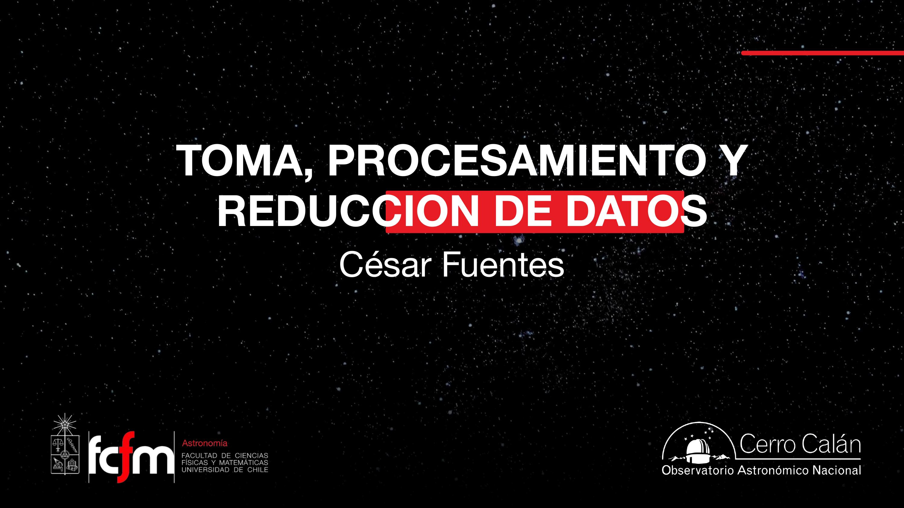
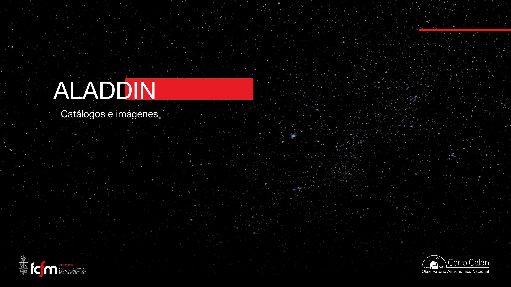
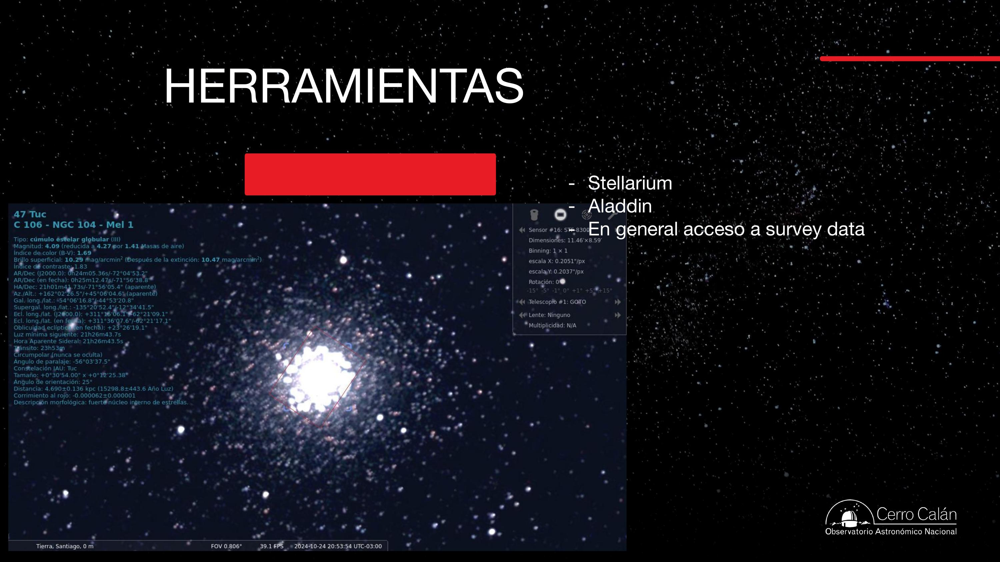
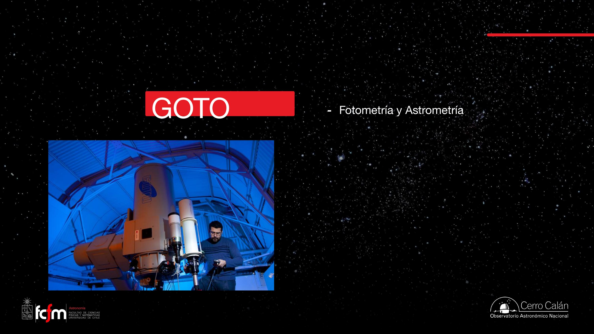
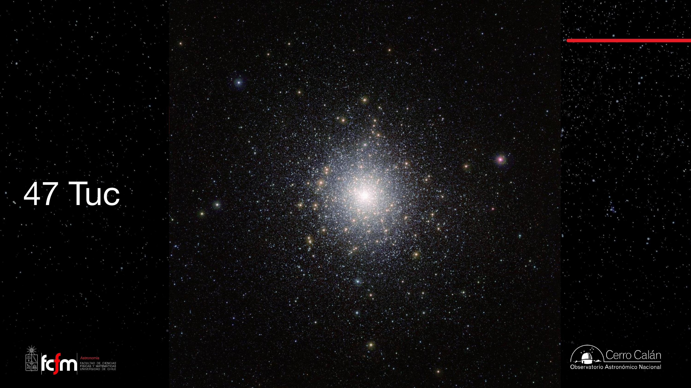
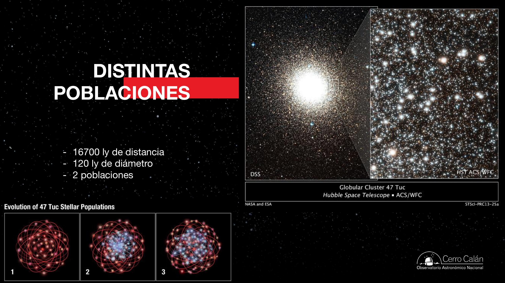
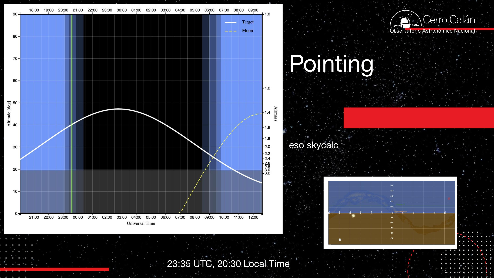

Big Data en Astronomía
Toma, procesamiento y reducción de datos a escala industrial. La astronomía siempre tuvo muchos datos; lo nuevo es poder procesarlos. Recorremos el camino del ojo a la placa al CCD, la Ley de Moore y el crecimiento exponencial del cómputo y del área colectora, los surveys y el "blinking" que descubrió las supernovas Ia, las unidades de datos y la aproximación binaria, la cámara de 3,2 gigapíxeles del Vera Rubin, la señal de radio y la interferometría, la resolución y el seeing, el zoom extremo del EHT, y los archivos públicos y herramientas que hoy democratizan la observación.
«Big Data» es una de esas buzzwords que alguna vez significó algo preciso y hoy significa casi cualquier cosa. El profesor la usa como excusa para una pregunta honesta: en astronomía siempre hubo muchos datos —¿qué es «mucho»?—, pero recién ahora tenemos cómo procesarlos. Esta clase es, en el fondo, sobre cómo se hace astronomía moderna cuando el cuello de botella ya no es guardar la luz sino computarla. Para un ingeniero/informático el hilo es familiar: digitalizar (pasar a 0 y 1) permite aplicar reglas de cómputo; la Ley de Moore y el crecimiento exponencial del área colectora habilitan pipelines que procesan un cielo entero cada noche; la señal análoga se muestrea, se correlaciona y se transforma con Fourier; y la resolución tiene un límite físico (difracción) que ningún zoom de software puede vencer. La práctica observacional con el telescopio GOTO de Cerro Calán —apuntar a 47 Tuc, planificar con airmass, explorar catálogos— quedó para la clase siguiente por el clima, pero su preparación enmarca toda la sesión.
Big Data: ¿qué es «mucho»?
La astronomía siempre fue una ciencia con muchos datos. Lo que cambió no es el volumen, sino la capacidad de procesarlo.
El profesor parte con una confesión metodológica: «Big Data» es una buzzword, una palabra rimbombante que «significó en algún momento algo bien preciso y después enajenó el significado». La astronomía siempre tuvo muchos datos —desde que Galileo dibujaba puntitos—, así que la pregunta interesante no es «¿hay muchos datos?» sino ¿qué es «mucho»? y, sobre todo, ¿qué podemos hacer con ellos?
También aterriza una idea sobre qué hace realmente un astrónomo: mucho menos «mirar por el telescopio» y mucho más escribir propuestas, comunicar y analizar datos. El mensaje para quien viene de ingeniería: lo valioso es aprender cosas útiles (medir, programar, analizar), porque eso sirve dentro y fuera de la astronomía.

«Big Data» en la industria se suele caracterizar por las 3 V (volumen, velocidad, variedad). En astronomía las tres aparecen: volumen (petabytes por survey), velocidad (procesar el cielo entero en un día) y variedad (imágenes, espectros, series temporales, radio). El profesor adelanta el corolario que cruza toda la clase: tener los datos no sirve si no puedes procesarlos ni visualizarlos. El cuello de botella moderno es el cómputo, no el almacenamiento.
Del ojo a la placa al CCD: digitalizar
El gran salto no fue ver más luz, sino convertir la luz en números sobre los que se puede computar.
La cadena histórica de la observación es: ojo → placa fotográfica → CCD. Durante siglos la astronomía funcionó «a ojo»: uno miraba por el telescopio y reportaba lo que veía (como los dibujos de Galileo, que eran «el dato» que aparecía en un paper). Con la fotografía se pudo registrar de verdad lo observado: la placa es un método de grabación análogo —queda guardado, pero no digitalizado—.
El punto clave es qué significa digitalizar: «transformar en 0 y 1 que viven en una tabla dentro de un computador». No tiene por qué ser una grilla cuadrada tipo Excel (hay cámaras con píxeles hexagonales, y en radio importa la posición en el cielo de cada muestra), pero un arreglo rectangular de píxeles es la forma más cómoda. Lo que la digitalización habilita es lo esencial:
Una vez que la imagen es un arreglo de números, uno puede aplicar reglas de cómputo: sumar imágenes, restarlas, dividirlas, promediarlas. De esas operaciones salen los productos científicos —una curva de luz para exoplanetas, un espectro, una detección—. Qué buscamos depende de la ciencia; cómo lo obtenemos es siempre aritmética sobre arreglos. (El detector moderno funciona con el mismo principio que el ojo: un fotón arranca una carga; lo vimos en la clase de SNR.)
Una imagen astronómica es exactamente un array 2D (o un tensor si sumas filtros/tiempo). «Reducir» y combinar datos es álgebra de arreglos: numpy, FITS, operaciones elemento a elemento. La placa análoga es como una grabación en cinta: tiene la información, pero no puedes hacerle un for encima hasta digitalizarla. Por eso hoy se viaja a digitalizar placas de hace 100 años: convertir un archivo histórico análogo en datos computables.
Cómo computa un computador y la Ley de Moore
De una compuerta lógica de 5 volts a un crecimiento exponencial de transistores que se ve recto en escala logarítmica.
Para entender por qué «ahora sí» se pueden procesar tantos datos, el profesor baja al fondo de la máquina. La unidad básica es el bit (1/0). Físicamente, eso es una señal de +5 V (= 1) o 0 V (= 0). Una compuerta lógica es una «cajita negra» que recibe unos y ceros y entrega un uno o un cero según una tabla de verdad (un XOR, un AND…). Con esa pieza elemental, repetida millones de veces, un computador suma, multiplica «y hasta inventa historias».
La anécdota del wifi que «se desenchufa y se enchufa»: las cosas electrónicas se bloquean porque toda esa lógica depende de mantener bien definidos los niveles de voltaje (5 V vs 0 V). Cuando un estado queda en un limbo, hay que reiniciar para volver a un estado lógico limpio. Es la versión física del «apágalo y préndelo».
La Ley de Moore describe que el número de transistores (unidades lógicas) por chip crece exponencialmente en el tiempo —aproximadamente se duplica cada ~2 años—. La forma de ver ese crecimiento es el truco de ingeniería de toda la clase: graficar en escala logarítmica. Si el eje vertical es logarítmico (10, 100, 1000, 10⁴…) y los datos forman una línea recta, eso es crecimiento exponencial.
Tu intuición sobre «megahertz», operaciones por segundo y FLOPS sale de aquí. Lo que importa para datos no es solo la frecuencia de reloj, sino cuántas unidades lógicas caben por cm² (densidad) y cuántas operaciones útiles por segundo logras. Ojo: la Ley de Moore es una observación empírica/económica, no una ley física, y hace años se desacelera (límites de litografía y disipación). El crecimiento real hoy viene más del paralelismo (GPU, clusters) que de chips más rápidos.
Dos crecimientos exponenciales
Crece el cómputo, pero también el área colectora de luz en la Tierra. Su cruce habilita proyectos antes imposibles.
Además del cómputo, el área colectora total de luz en la Tierra también crece exponencialmente. Desde el primer telescopio de Galileo (una «cosita» de fracciones de metro cuadrado, que era «toda la capacidad colectora del mundo» en ese momento) hasta los súper gigantes como el ELT (Cerro Armazones), cada generación junta más fotones. La fracción de la luz que llega a la Tierra que somos capaces de recibir, guardar y computar sube y sube.
El cruce de ambas curvas es lo que vuelve posibles proyectos que antes eran ciencia ficción. El caso emblemático es el Vera C. Rubin Observatory (entre Cerro Pachón y Tololo): cuando se propuso (~2020) la idea de tomar un montón de imágenes con una cámara gigante y procesarlas durante el día para encontrar todo lo que cambió en el cielo era, literalmente, una tarea imposible con el cómputo de entonces. La apuesta era que los computadores serían suficientemente baratos y rápidos a tiempo. Tras retrasos, se espera que el survey comience «a fin de año» y dure 10 años: ahora sí se procesan todos esos datos en un día.
Proponer en 2020 un sistema que solo será viable con el hardware de 2030 es planificación de capacidad apostando a una curva exponencial. Es el mismo razonamiento de un pipeline de datos que se dimensiona para el throughput proyectado, no para el actual. Si la curva se cumple, ganaste; si se desacelera (como Moore), el proyecto sufre. El Rubin es un data pipeline en tiempo casi-real: ingesta nocturna, reducción diurna y emisión de alertas de objetos que cambiaron.
Placas, «blinking» y supernovas Ia
El método manual de comparar dos placas para cazar lo que cambia preparó el terreno para descubrir la expansión acelerada del universo.
Antes de los computadores, la astronomía de «lo que cambia» se hacía a mano. En Cerro Calán había una mesa especial donde se ponían dos placas fotográficas de la misma zona del cielo, tomadas en fechas distintas, iluminadas para poder compararlas (la técnica del blink comparator, «hacerlas jugar»). Lo que aparecía en una y no en la otra —un punto nuevo junto a una galaxia— era candidato a supernova; algo que se movía entre placas, un asteroide. Ese trabajo dio origen al survey Calán–Tololo.
Aunque «nadie pensaba en eso como Big Data», una sola placa fotográfica de vidrio, escaneada con detalle, equivale a varios gigabytes. Es decir: la Big Data astronómica ya existía hace 100 años; lo que faltaba era cómo procesarla. Por eso hace años se digitalizan masivamente estos archivos históricos (incluso viajando a China para escanearlos): convertir un siglo de placas análogas en datos computables permite descubrir, por ejemplo, una estrella que se movió lentísimo a lo largo de 100 años, algo imposible de ver a ojo placa por placa.
Supernovas Ia: candelas estándar
Las supernovas de tipo Ia son útiles porque «siempre brillan más o menos con el mismo wattage». La razón física: una enana blanca acreta masa de una compañera y, al alcanzar ~1,4 masas solares (límite de Chandrasekhar — atribución externa para contexto), explota de forma casi idéntica. Si conoces el brillo intrínseco (la «linterna» que sabes cuánto ilumina), midiendo cuán débil se ve infieres la distancia; y por el efecto Doppler en sus líneas, la velocidad.
Combinando muchas supernovas Ia, dos equipos (el de Saul Perlmutter en Berkeley y el de Brian Schmidt/Adam Riess) descubrieron en 1998 que las más lejanas se alejaban más lento de lo esperado: la expansión del universo se está acelerando. Eso dio el Premio Nobel de Física 2011 (atribución externa). La calibración a ojo de supernovas cercanas (parte de ella, trabajo hecho en Chile) sirvió para anclar las lejanas. La frontera actual: detectar la supernova cuando recién empieza a brillar (en su fase de ascenso), no después del pico —justo lo que promete el Vera Rubin—.
El blinking manual es detección de cambios (change/anomaly detection) sobre dos frames registrados. Hoy es image differencing: alineas (registras) dos imágenes, las restas y buscas residuos significativos sobre el ruido. El Rubin emite millones de alertas por noche con esta idea. Y la candela estándar es un regressor calibrado: una variable observable (brillo) con escala conocida que te da otra (distancia).
Unidades de datos y la aproximación binaria
De KB a EB, y por qué en computación 1 kilo «de verdad» son 1024 y no 1000.
Ahora que el dato es digital, podemos ponerle número de bytes —directamente relacionado con cuánto cuesta procesarlo—. El profesor pasea por la escala: el módem que «pitaba» a ~14,4 kbps, el disquete de 1,4 MB, una memoria de pocos GB, hasta el TB, PB y EB de los surveys modernos. Cada prefijo es un factor de mil (kilo, mega, giga, tera, peta, exa).
Pero hay una sutileza muy usada en física y computación: la aproximación binaria. Como los computadores miden en potencias de 2, se aprovecha que
Es la eterna confusión KB vs KiB: el estándar SI usa 10³ (1 KB = 1000 B), mientras que la memoria RAM y muchos sistemas usan 2¹⁰ (1 KiB = 1024 B). Por eso un disco «de 1 TB» muestra ~931 GiB en el sistema operativo: misma cantidad de bytes, distinta convención. Y elegir tamaños potencia de 2 (buffers, FFT, texturas) no es estético: alinea memoria y acelera el cálculo.
La cámara del Vera Rubin (LSST) y los CCD
3,2 gigapíxeles hechos de 189 sensores, con toda una electrónica de lectura y un sistema de enfriamiento para domar el ruido.
La cámara del Vera Rubin es la más grande del mundo: 3,2 gigapíxeles. No es un solo sensor: son 189 CCD de 16 megapíxeles cada uno (189 × 16 ≈ 3,2 Gpix), agrupados en el plano focal. Detrás hay «toda una electrónica» para leer en paralelo todas esas camaritas. Para comparar, un celular ronda decenas de megapíxeles; aquí hablamos de tres órdenes de magnitud más, en un solo disparo.
Recordando los CCD: leer la imagen significa mover la carga (empujar electrones por el silicio aplicando voltajes). Mover carga calienta, y todo lo que se calienta «brilla» e introduce ruido electrónico (corriente de oscuridad). Por eso los telescopios empiezan a enfriar la cámara horas antes de observar, típicamente con nitrógeno líquido, para que ese ruido térmico no domine sobre la señal. Es la misma lógica de SNR de la clase anterior: bajar el ruido de fondo para que la señal débil sobreviva.
El reto óptico de una cámara tan grande es que todos los puntos estén en foco simultáneamente en todo el plano —centro y bordes—. Eso exige que la cámara esté perfectamente alineada con la óptica del telescopio. Y como las estructuras pesan toneladas, «los fierros se doblan» al apuntar: hay que aplicar correcciones mecánicas activas para mantener el foco. La luz, que llega como un frente casi esférico, se transforma en una onda plana que termina en el plano focal; vidrios de colores (filtros) seleccionan longitudes de onda para armar imágenes en distintas bandas.
Leer 189 sensores «a la vez» es un problema de I/O paralelo y sincronización: múltiples amplificadores, múltiples canales de lectura, y luego ensamblar el mosaico. El enfriamiento es control térmico para mantener el SNR; las correcciones mecánicas son un lazo de control en tiempo real (óptica/estructura activa). Todo antes de que el primer bit llegue a la pipeline.
Surveys y footprint: mirar todo el cielo
Observar «de manera agnóstica» una panorámica del cielo, en vez de apuntar a un objeto. La huella del survey y qué zonas se evitan.
Un survey es observar «de manera agnóstica»: en vez de sacarle una foto detallada a una galaxia en particular, se barre todo lo disponible —una panorámica del cielo—. El Vera Rubin mirará el cielo disponible cada tres noches. La región del cielo que cubre un survey se llama footprint («la huella»).
Qué se puede observar cada noche depende de dónde está el Sol: uno observa la zona del cielo opuesta al Sol, y esa ventana se va corriendo a lo largo del año (en coordenadas ecuatoriales, la trayectoria del Sol es la eclíptica). Además, muchos surveys evitan el plano de la Vía Láctea: está tan «lleno de estrellas» y es tan brillante que cuesta separar una fuente de otra. Según la ciencia que se busque, se esquiva el plano galáctico.
Un survey es como construir un índice completo de una base de datos: caro de hacer una vez, pero después cualquiera consulta sin volver a observar. Una observación dirigida es una query puntual. El footprint y el calendario de visibilidad son restricciones de scheduling: maximizar cobertura útil sujeto a posición del Sol, fase lunar, airmass y clima. El Rubin resuelve un problema de optimización de agenda cada noche.
Radio: de la antena a la señal digital
En radio la luz es una onda que sube y baja en el tiempo. Medirla es registrar un voltaje; digitalizarla abre todo el procesamiento de señales.
No todo es luz visible. En radio, una antena recibe ondas electromagnéticas: si un electrón se mueve (modulado) en una antena emisora, emite una onda; los electrones de la antena receptora «se ponen a bailar» de la misma manera al llegar la onda. Lo que medimos es un voltaje que varía en el tiempo —exactamente la señal análoga—, análogo a lo que la placa hacía con la luz visible.
Una antena no recibe igual de todas las direcciones: tiene un patrón de sensibilidad con forma de lóbulo (muy sensible al frente, algo a los lados). El profesor lo ilustra con los transceptores de avalancha: según la orientación, se escucha mucho o casi nada. Esa direccionalidad —y los lóbulos secundarios— es clave al diseñar y combinar antenas.
¿Qué hacemos al digitalizar esa señal? Es una enorme cantidad de muestras por segundo, así que se usan trucos. Uno clásico es guardar solo los cruces por cero (cuándo la señal pasa de positivo a negativo): con eso se conserva buena parte de la información (sobre todo la fase/frecuencia) sin almacenar cada muestra. Hay cursos enteros de procesamiento de señales sobre cómo tratar esto.
Esto es Digital Signal Processing puro: una señal continua que se muestrea para volverla discreta. El teorema de Nyquist–Shannon (externo) fija la tasa mínima de muestreo (2× la frecuencia máxima) para no perder información. El truco de los zero-crossings es una forma de compresión/codificación que prioriza fase y frecuencia. El patrón del lóbulo es, matemáticamente, el beam de la antena —su respuesta espacial—.
Interferometría y correlación
Combinar varias antenas equivale a un telescopio enorme. El precio: conocer con precisión exquisita la distancia entre antenas y correlacionar montañas de datos.
Con una sola antena, para hacer una imagen en radio hay que barrer: apuntar a una zona, medir el voltaje un rato, correrse, medir, y así muestrear el cielo punto a punto (lento). La interferometría (un «arreglo» de antenas, como ALMA) es otra cosa: combina la señal de muchas antenas que miran el mismo punto.
La clave es el desfase. La luz de una estrella muy lejana llega como un frente plano; según el ángulo, llega antes a una antena que a la otra. Si guardas la señal A y la señal B (idéntica pero con un pequeño delay) y conoces ese desfase, puedes hacer un análisis de Fourier y reconstruir directamente la imagen del cielo —sin barrer—. Eso hace ALMA.
El proceso de combinar señales se llama correlación: tomar dos listas de números, multiplicarlas y sumarlas, corriendo una respecto a la otra (variando el retardo). Para que funcione, hay que conocer la distancia entre antenas —y la longitud de los cables— con precisión del orden de la longitud de onda. En ALMA, un edificio a 5000 m lleno de computadores (el correlador) hace esto, y genera volúmenes de datos aún mayores que el Rubin.
La correlación cruzada y la transformada de Fourier son el corazón del DSP. Un interferómetro mide el campo en el dominio de Fourier (visibilidades) y reconstruye la imagen con una transformada inversa: cada par de antenas muestrea una frecuencia espacial dada por su línea de base. Es el mismo principio que la tomografía o el beamforming. Y conocer el retardo «al nivel de λ» es sincronización de relojes a nivel de picosegundos.
Resolución vs magnificación
Hacer zoom no agrega detalle. La resolución la fija la difracción: longitud de onda dividida por el tamaño de la apertura.
Confusión clásica: magnificación ≠ resolución. Hacer zoom a una foto la agranda, pero no añade detalle —se ven los píxeles—. La resolución es «el detalle más pequeño que puedo distinguir», y tiene un límite físico: la difracción.
El profesor lo demuestra apretando los dedos frente a un láser (como el experimento de la rendija / Young): al hacer pasar la luz por un hoyo chico, se esparce en la dirección perpendicular. Es mecánica cuántica: la incerteza en por dónde pasó el fotón se traduce en incerteza en hacia dónde sale. Cuanto más chica la apertura, más se abre la onda. Por eso un punto no llega como un punto al detector, sino como una distribución: la PSF (Point Spread Function), «un cerrito».
Desde la Tierra, la atmósfera arruina la resolución: la luz atraviesa capas con distinto índice de refracción y se «dobla» de forma cambiante (turbulencia). Por eso se buscan sitios secos, altos y de viento laminar (norte de Chile). El mejor seeing del mundo (La Campana) ronda 0,3″; lo típico, ~1″. Consecuencia: un telescopio de 4 m no resuelve mejor que uno mucho menor —solo junta más luz, más rápido—, salvo que use trucos. La óptica adaptativa mide la distorsión (con una estrella brillante o un láser guía) y deforma el espejo en tiempo real para compensar. El ELT y el GMT nacen para eso. Resolución también mejora yéndose al espacio (sin atmósfera).
La PSF es el kernel con que el sistema óptico convoluciona la escena real: imagen observada = escena ⊛ PSF + ruido. «Más píxeles» no ayuda si la PSF es ancha (basta ~4–5 px por PSF para muestrearla bien — relación de Nyquist espacial). Deconvolucionar para «afinar» es un problema inverso mal condicionado: por eso la óptica adaptativa (mejorar la PSF en hardware) gana siempre al post-proceso.
El EHT: zoom extremo al agujero negro
Interferometría a escala planetaria: 50 microsegundos de arco, relojes atómicos y petabytes que viajaron en avión.
La imagen del agujero negro del Event Horizon Telescope (EHT) es el «zoom más grande que nadie ha visto»: resuelve ~50 microsegundos de arco. Para dimensionarlo: 1 minuto de arco es el ojo; bajar a 1 segundo de arco ya pide aperturas de ~10 cm; llegar a microsegundos exige una apertura del tamaño de la Tierra. El EHT lo logra usando antenas repartidas por todo el planeta como un solo interferómetro (línea de base ≈ diámetro terrestre).
Como las antenas están en continentes distintos, no podían enviarse la señal en tiempo real para correlacionar. La solución: cada sitio observó el mismo agujero negro «al mismo tiempo» usando relojes atómicos para sellar el tiempo, y grabó petabytes en discos. Luego esos discos viajaron en avión a un correlador central —a esas alturas, mover los datos físicamente era más rápido y barato que por internet—. La correlación corrigió por la geometría y el movimiento de cada telescopio. La prueba de que funcionó: distintos grupos, de forma independiente, llegaron a la misma imagen (replicación).
«Sneakernet»: cuando el dataset es enorme, el ancho de banda de un avión cargado de discos supera al de cualquier enlace de red (el clásico «nunca subestimes el ancho de banda de una camioneta llena de cintas»). Los relojes atómicos dan la marca de tiempo común para alinear streams grabados por separado —el mismo problema de sincronización de logs distribuidos, pero a nivel de picosegundos—. La replicación por grupos independientes es validación cruzada contra artefactos de pipeline.
Archivos, catálogos y herramientas
Los datos hoy son públicos y curados en catálogos. Tener acceso ya no es el problema: el cuello de botella es la capacidad de analizarlos.
El profesor recorre la historia de los surveys con datos digitales, y el punto recurrente es que todos esos datos están disponibles —para astrónomos y para el público—. Algunos hitos mencionados:
- Palomar (Monte Palomar): uno de los primeros surveys con datos digitales; «cabía en un disco duro», ejemplo del crecimiento posterior.
- 2MASS: mapeó todo el cielo en el infrarrojo (2 micrones) y produjo un catálogo.
- SDSS (Sloan Digital Sky Survey): las imágenes más reconocibles y ubicuas del cielo; casi un estándar.
- Pan-STARRS / ATLAS: ligados a la Fuerza Aérea de EE.UU.; ATLAS detectó el primer objeto interestelar (ʻOumuamua). Anécdota de seguridad: había que borrar los satélites de los datos, y aprendieron que borrarlos «con Photoshop» dejaba rastro estadístico, así que borraban el 10 % de los píxeles para impedir reconstruir órbitas.
- SKA (Square Kilometer Array): en planificación, con tres ubicaciones; tomará más datos que el Rubin en toda su vida.
- DECam / Dark Energy Survey en el telescopio Blanco (Tololo), y DESI, que en vez de imágenes toma espectros con un robot que posiciona fibras ópticas sobre cada galaxia, para mapear la telaraña cósmica.
- Deep Space Network: tres sitios que dan cobertura 24 h para recibir datos de las sondas del sistema solar (si no agarras el dato cuando llega, se pierde).
Un gráfico que les gusta a los astrónomos compara longitud de onda vs. área cubierta vs. número de objetos: hay un trade-off entre una ventana chica y muy profunda (pocos objetos, muy débiles) y una grande y somera (muchos objetos, brillantes). Para context: el cielo entero son ~40.000 grados² (la Luna es ~½°×½°, así que el cielo «cabe» ~160.000 lunas).


Archivos como MAST (Space Telescope) dejan crear una cuenta y bajar datos de Hubble, JWST, Kepler, la sonda Parker, observatorios solares, etc. —el JWST suele liberar datos a las pocas horas si no hay periodo de propiedad—. Pero el profesor insiste: «no sirve de nada tener la información si no tienes capacidad de analizarla». Como con las fake news, cuando todos tienen acceso a todo, lo escaso es separar el dato del ruido. Por eso Chile negoció su 10 % de tiempo de observación (un royalty a los telescopios) no solo como acceso a datos, sino como capacidad de cómputo (horas en clusters/nube) para procesarlos.
El profesor relativiza el hype: la «inteligencia artificial» en astronomía existe hace rato y muchas veces es algo simple (clasificadores, ajustes). Lo crítico es el entrenamiento: proyectos como Galaxy Zoo usan a miles de voluntarios para etiquetar galaxias y así entrenar modelos. Un modelo «vale» lo que valen sus etiquetas: si no sabes cómo fue entrenado, no puedes confiar en su resultado. Es el mismo principio de cualquier pipeline de ML: garbage in, garbage out.
Planificar y observar: GOTO y 47 Tuc
La práctica observacional que enmarca la clase: apuntar el GOTO a un cúmulo globular, planificar con airmass y hacer fotometría y astrometría.
La clase venía preparada como una práctica con el telescopio GOTO de Cerro Calán (un instrumento de ~25 años, con automatización moderna respecto a los más antiguos). El objetivo: tomar datos reales y hacer fotometría (medir brillos) y astrometría (medir posiciones) —los dos productos básicos de una imagen reducida—. La observación se pospuso por clima, pero la planificación es parte del aprendizaje.

El objeto elegido es 47 Tucanae (47 Tuc / NGC 104), uno de los cúmulos globulares más espectaculares del cielo austral. Es un buen blanco: muy brillante, denso en estrellas (ideal para practicar fotometría y astrometría), y con estructura interna interesante.


Planificar el apuntado (pointing)
Antes de observar hay que saber cuándo el objeto está alto. La herramienta (ESO skycalc) grafica la altitud del blanco a lo largo de la noche, y en el eje derecho el airmass (la cantidad de atmósfera que atraviesas, , de la clase anterior). Se observa cerca del tránsito (máxima altitud, mínimo airmass), evitando que la Luna ilumine demasiado.

El mensaje central de la clase: en astronomía siempre hubo muchos datos; lo que cambió es la capacidad de procesarlos, gracias al crecimiento exponencial del cómputo (Ley de Moore) y del área colectora. Digitalizar permite computar; los surveys (Rubin, SKA) y la interferometría (ALMA, EHT) generan petabytes; la resolución tiene un límite físico (difracción) que se ataca con aperturas grandes, interferometría y óptica adaptativa; y los archivos públicos democratizan los datos, dejando como recurso escaso la capacidad de análisis. Próxima clase: la observación real con el GOTO (clima permitiendo) y la continuación con el módulo de Planetas.
Conceptos clave
Tabla de repaso rápido.
| Concepto | Qué es / valor | Por qué importa |
|---|---|---|
| Big Data (astro) | Buzzword; astronomía siempre tuvo muchos datos | El límite hoy es procesar, no almacenar |
| Digitalizar | Pasar a 0/1 en un arreglo | Habilita aritmética sobre imágenes (sumar, restar) |
| Compuerta lógica | +5 V = 1, 0 V = 0; XOR/AND… | Pieza elemental del cómputo |
| Ley de Moore | (≈duplica cada 2 años) | Recta en escala log = crecimiento exponencial |
| Área colectora | Galileo → ELT, también exponencial | Más fotones recibidos, guardados y computados |
| Vera Rubin / LSST | Cielo cada 3 noches, 10 años | Procesar el cielo entero en un día |
| Blinking | Comparar 2 placas de la misma zona | Detectar lo que cambió (supernovas, asteroides) |
| Supernova Ia | Explota a ~1,4 M☉; candela estándar | Distancia → expansión acelerada (Nobel 2011) |
| Aprox. binaria | Por qué «4 Mpx» = 4·2²⁰; potencias de 2 = cómputo rápido | |
| Cámara LSST | 3,2 Gpix = 189 × 16 Mpx | La más grande del mundo; lectura paralela |
| Enfriar el CCD | Nitrógeno líquido | Mover carga calienta → ruido térmico |
| Survey / footprint | Observar «agnóstico» todo el cielo; «huella» | Índice del cielo; se evita el plano galáctico |
| Señal de radio | Voltaje análogo | Se muestrea (Nyquist); truco de cruces por cero |
| Lóbulo / beam | Patrón direccional de la antena | Resolución y sensibilidad espacial |
| Interferometría | ; correlación + Fourier | Resolución de un telescopio del tamaño de B |
| Resolución | Límite físico; zoom no la mejora | |
| PSF | Cómo se «esparce» un punto | Convolución de la escena; difracción |
| Seeing / AO | ~0,3–1″; óptica adaptativa con láser | La atmósfera limita; se corrige el espejo |
| EHT | ~50 µas; base ≈ Tierra | Relojes atómicos; petabytes en avión |
| Archivos públicos | MAST, 2MASS, SDSS, Aladin, Stellarium | Acceso democratizado; escasea el análisis |
| 47 Tuc | 16.700 ly, 120 ly, 2 poblaciones | Blanco de la práctica GOTO (fotometría/astrometría) |
Exámenes de práctica
10 exámenes de 5 preguntas (3 de alternativas autocorregibles + 2 de respuesta escrita).